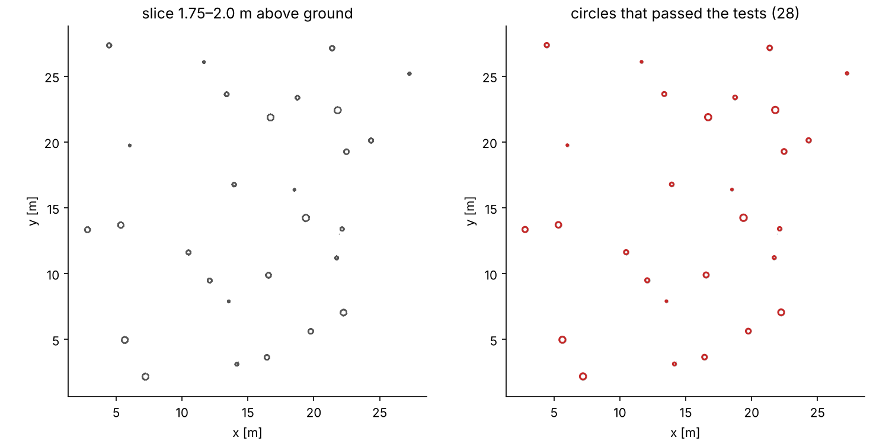
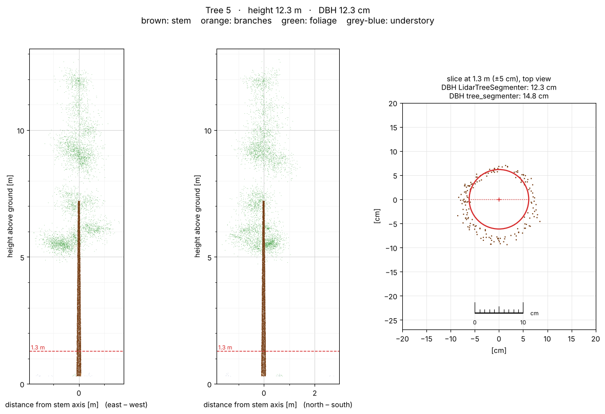
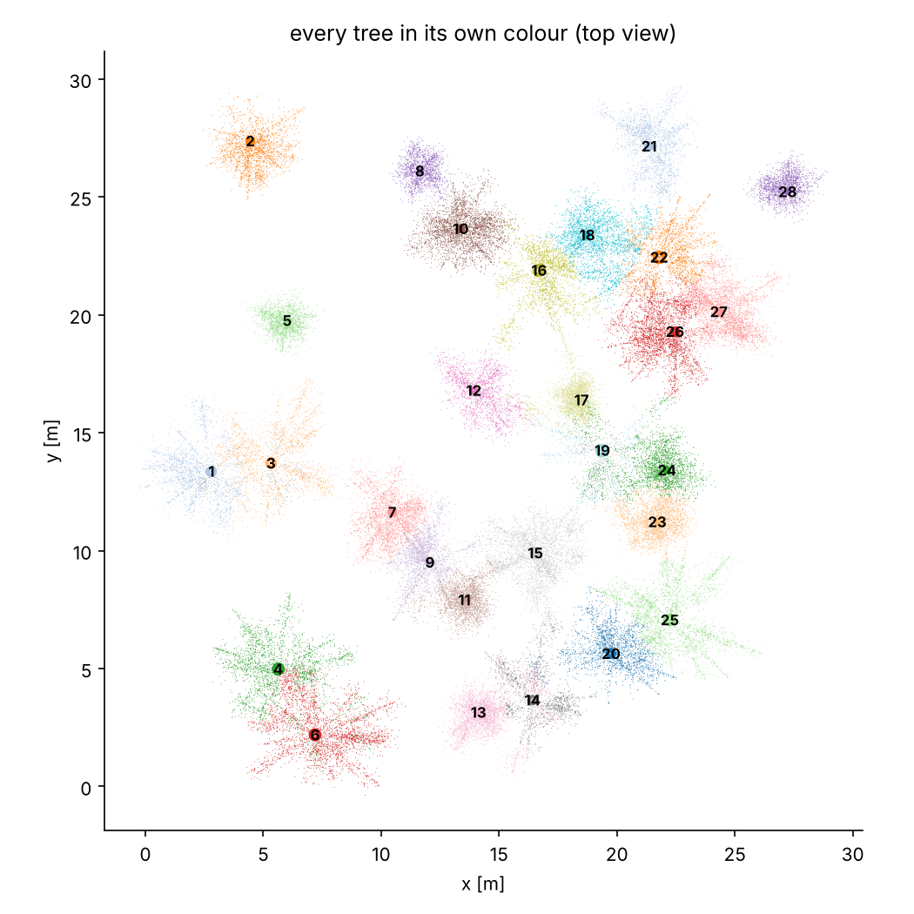

LidarTreeSegmenter – Tree Detection and Forest Inventory from LiDAR Point Clouds
LidarTreeSegmenter is a Python tool I am developing to turn a terrestrial or mobile LiDAR scan of a forest plot (TLS, MLS, handheld SLAM) into tree-level inventory data. The idea is simple: drop a .laz / .las file onto the program and get, for every tree, its position, DBH, height and an estimate of timber volume, plus a plot-level summary.
The project is still in active development. The pipeline runs end to end, but it has so far been tested mainly on a synthetic test plot, so the results should be treated as experimental rather than validated inventory figures.
How it works
Pre-processing: noise removal, ground classification, terrain model and normalisation of point heights above ground.
Stem detection: circles are fitted to bark points in thin horizontal slices; circles that stack into a near-vertical cylinder are accepted as stems.
Segmentation: every point of the cloud is assigned to the nearest stem using a neighbourhood graph, so each tree gets its own ID.
Tree parts: the stem is tracked upwards every 20 cm into the crown and points are split into stem, branches, foliage and understory.
Quality checks: geometric tests to remove false trees (shrubs, stumps, snags) and to resolve DBH disagreements.
Outputs: Excel report, GeoPackage with a QGIS project, per-tree images and an interactive 3D view in the browser.
No pre-trained machine-learning model or GPU is needed: the approach is mostly geometric (circle and cylinder fitting, neighbourhood graphs).

A horizontal slice of the test plot (left) and the stem circles that passed all tests (right).

Output for a single tree: two side views split into stem, branches and foliage, and the cross-section at 1.3 m used to measure DBH.

Segmentation of the synthetic test plot, top view: every tree has its own colour and number.
Status: this is an unfinished, experimental tool. Parts of the pipeline (especially species recognition from tree shape and volume estimation with generic form factors) are rough and need more work and proper validation against field measurements. Next steps: testing on more real plots, comparing with established segmentation methods and improving accuracy in dense stands.